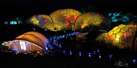
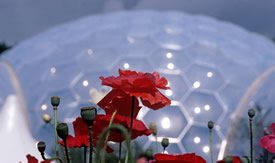
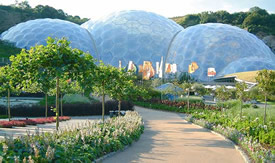
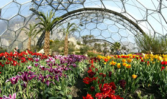
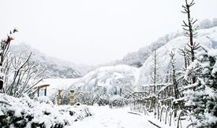
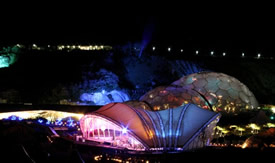
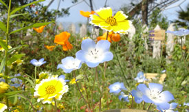
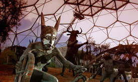

Eden Project - The Global Garden
- Eden Project (01726 811911)
Eden Project,
Bodelva,
Cornwall,
PL24 2SG
Find them on Google Maps
www.edenproject.com
What is it? - The Eden Project is a large-scale environmental complex in Cornwall. It is an educational charity trying out new ideas and ways of thinking. The project is located in a reclaimed china clay pit.
The complex comprises a number of domes that house plant species from around the world, with each emulating a natural biome. The domes are made out of hundreds of hexagons plus a few pentagons that interconnect the whole construction together; each of these is a transparent cushion made of tough plastic. The first dome emulates a tropical environment, the second a warm temperate, Mediterranean environment. The Eden Project was opened to the public in 2001, but is considered a working progress and a living building.
Where is it? - The Eden Project is located 5 miles from St. Austell in the clay mining area. Its 49 miles from Penzance but is well worth the trip.
When is it open? - The Eden Project opens daily at 10am and closes at various times throughout the year.
- Summer - 17 March to 26 October - 10am to 6pm (last entry at 4.30pm)
- Winter - 10am until 4.30pm (last entry at 3.00pm)
Why Should I/we go? - A day out like no other in the UK. Plenty to do and see, plants wildlife and plenty of interesting education centres. Suitable for the whole family, but not the best attraction for under 7's. The entire site was built from the ground up to be wheelchair friendly.
|  | |
|  |  |
|  |  |
|  |  |
all images from the official eden site - edenproject.com